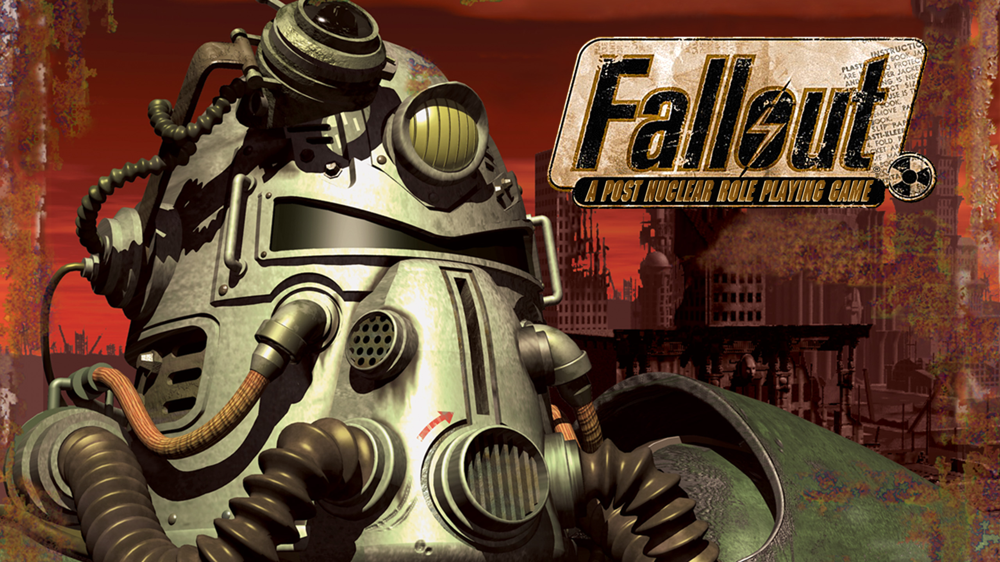

War... War never changes...
Fallout is a series of post-apocalyptic role-playing video games. The series was originally created by Interplay Entertainment in 1997. Since 2008, the series has been produced and published by Bethesda Softworks. There have been six full role-playing titles in the series (Fallout, Fallout 2, Fallout 3, Fallout: New Vegas, Fallout 4 and Fallout 76), one squad-based tactical RPG combat spin-off (Fallout Tactics), one action RPG dungeon-crawler spin-off (Fallout: Brotherhood of Steel) and one simulation game (Fallout Shelter). There are also several Fallout games which were canceled during development.
The background story of Fallout involves a "what-if" scenario in which the United States of America tries to devise fusion power resulting in the whole country becoming hegemonic and having less reliance on petroleum. However, this is not achieved until 2077, shortly after an oil drilling conflict off the Pacific Coast pits the United States against China. It ends with a nuclear exchange resulting in the post-apocalyptic world in which the game takes place.
Before the nuclear exchange took place, great underground Vaults were constructed across America, supposedly to protect the populace from the dangers of radiation. Although only 122 were constructed, over 400,000 would have been needed to protect the entire nation. This is due to the fact that the Vaults were never truly intended to save humanity; rather, they were social experiments being conducted by the United States government. The experiments that were conducted in the Vaults varied in lethality and cruelty, often ending in disaster and causing the collapse of their respective Vaults (like Vaults 22 and 106). Despite this, there have been examples of Vaults being able to sustain their inhabitants well into the post-apocalyptic world (like Vaults 81 and 101), though such instances were more so due to overseers violating their directives to help their people.
Each installment of the series takes these facts as the context to the subsequent adventures: much of the landscape the player travels through is scarred with wreckage as well as radiation. These effects are not limited to the environment. Mutated survivors, creatures and flora can also be found.